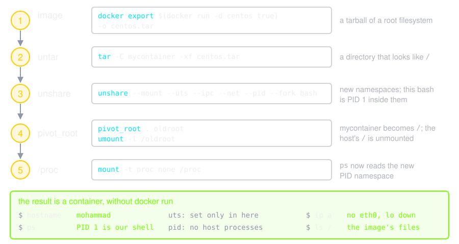

Hands On 🧪
Scripts that go with Containers from Scratch:
- create_container.sh builds a container from namespaces and pivot_root, without a runtime
- play_with_netns.sh explores network namespaces on their own
create_container.sh

play_with_netns.sh
![First, netns parham with head1 at 192.168.2.1/24 and netns mohammad with head2 at 192.168.2.2/24 joined by one veth pair; ping succeeds. Second, each namespace has a veth end, parham-end at 192.168.2.1/24 and mohammad-end at 192.168.2.2/24, whose other end, parham-br or mohammad-br, is a port on my-bridge in the host namespace. The bridge holds 192.168.2.254/24 as the gateway; with default routes, ip_forward and iptables MASQUERADE out and DNAT of port 80 to 192.168.2.2, parham pings mohammad through the bridge, pings 1.1.1.1 through NAT, and another host reaches a web server in mohammad on port 80](./img/netns.svg)